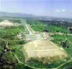
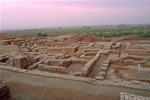
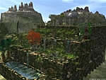
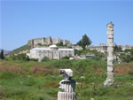

Mt. San Jacinto College
Syllabus, Fall Semester 2006
History 103 Online, History of World Civilizations to 1500
Welcome to Online 103!
Please read the following and keep a printed copy for your reference.
Course Description
History 103 is a survey of the world history from prehistory to 1500 CE. The focus of coursework covers economic, social, political, and cultural aspects with an emphasis on understanding and application of context and causation.
Prerequisite
None, but strong reading and writing skills are recommended.
Instructor
My name is Zita Worley. I teach at Mt. San Jacinto College located at 1499 N. State Street, in San Jacinto. If you need to contact me, the best way to do so is via email. Two addresses are listed below; the first is my campus email and the second is my home email which can be used as a backup. If you email me, you can expect me to get back to you within 48 hours.
Email: zworley@msjc.edu or followurbliss@verizon.net
I currently do not have established office hours, but am available for consultation by pre-arranged appointment. You can also leave a message with my MSJC voice mail at (951) 487-6752 x 1588 ext. 712. For further information visit my website.
Coursework
Coursework consists of textbook and primary source readings, online discussion and short papers. Exams consist of essays and short answers. Weekly quizzes are primarily multiple-choice, true or false and single word answer on the textbook reading assignments. Other weekly reading assignments consist of short answer questions on primary source reading assignments and Discussion Board threads.
Course Objectives
The successful synthesis of historical materials and ideas in the time period covered. Unlike high school history classes which tend to focus on the memorization of names and dates, the emphasis of this class is the analysis of information covered.
Accessing the Course
To access the course do the following:
- Go to My MSJC
- Login using your assigned User ID (your 1st initial, last name and last 3 digits of your student identification number)
- Type in your password (birthday: mmddyy)
For example if your name was John Smith, with the student ID # 13574975 and your birthday was December 25, 1970, your User ID would be "jsmith975" and password "122570." Once you have logged in, you should change your password to something easy for you to remember, but obscure to others.
At this point you should have access to your MSJC Blackboard Portal Page. Click on the link to "Hist-103 History of World Civilizations to 1500" under the title "Courses in which you are enrolled." You are now "in" class.
Announcements displaying current course information can be found in the large, slightly off-center section of the screen. To the left you will find a series of links for accessing assignments, resources, grades, and other pertinent information.
Requirements
You will need regular access to a computer with internet access ( Internet Explorer 5.0 or newer is best, however AOL, Netscape or Opera will suffice), an email account as well as your user name and password.
Computers are available for use on campus at the computer lab and in the library and Learning Center. If you are working from a personal computer you will need to install or download Java, Flash and Acrobat Reader if you do not already have these. Go to My MSJC and click on the "Online Learning" tab to access further information on online classes as well as plug-ins that allow you to view Microsoft Office files if you do not have Microsoft Office programs.
From time to time, synchronous online meetings will be held via CCCConfer. To ensure that your computer meets the necessary requirements for these meetings, visit the CCCConfer website.
As an individual, you will need to be a self-motivated, disciplined and independent learner to successfully manage this course. You need to be comfortable with navigating the internet, word-processing, and email, including sending and receiving documents in .doc or .rtf format.
Readings
Required Text: Bulliet, Crossley, et al. The Earth and Its Peoples, 3rd edition
The ISBN for the complete edition is 0-618-40334-5, and for Volume I: to 1550, 0-618-42765. Either is acceptable. If you plan on taking History 104 as well, I recommend getting the complete edition.
Note that used books can be obtained via the bookstore, the internet, friends, and other bookstores. The book is available at the campus bookstore and the online campus bookstore, but you may save money if you shop around.
Readings vary from 50 to 90 pages a week. Be sure to take the time to read prior to class since quizzes are based on the readings.
Grading
Grades are based on coursework: quizzes, discussions, tests, and papers. Points are broken down accordingly:
| 2 Exams at 150 points each: | 300 pts. |
| 15 quizzes at 10 points each: | 150 pts. |
| 30 discussion threads at 5 points each (2 per week): | 150 pts. |
| 2 short papers at 100 points each: | 200 pts. |
| Total: | 800 pts. |
The course is organized according to weekly assignments. Quizzes will only be available for their associated week so make sure you stay current in regards to your reading assignments. Discussion assignments need to be completed during their assigned weeks as well to receive credit, but discussion threads will remain available for those who wish to continue exploring posted topics.
Discussion assignments will be graded on a 0-5 scale. To get the full 5 points per assignment, you will need to post a one paragraph response to the posted question. Not responding or responding after the due date will result in a "0". Your responses must be pertinent, logical and knowledgeable to receive credit.
Please note the due dates for the papers and dates set for exams in the list of assignments. There is no extra credit offered, and late work will not be accepted under normal circumstances. If any extenuating circumstances arise which may hinder your ability to complete course expectations or if you require special accommodations due to a disability, please notify me as soon as possible. In the case of extenuating circumstances, I may accept late work, but with a reduction in grade.
If you miss an exam or paper due date you are required to contact me before the end of that work day or accept a failing grade for the missed work, regardless of the circumstance. Papers should be emailed to me as .doc or .rtf attachments or may be dropped off at or sent to the Learning Center in the Mt. San Jacinto library.
A Note on Plagiarism
Whenever you quote five or more consecutive words from a work that is not your own, you must use quotation marks and pass reference to the author, page number (if from a book or article) or source if the previous are not available. For example, the following quote was taken from page 418 of your text:
"Since ancient times travel across the salt waters of the world's seas and oceans had been one of the great challenges to people's technological ingenuity." (Bulliet, 418)
To not pass reference properly is to plagiarize, whether you do so consciously or inadvertently. Plagiarism and cheating will result in a "0" on the assignment if detected.
Testing
Since testing is primarily essay and short answer, writing skills are essential for this class. If you have never done any written tests in college or high school, or if you believe that writing is your worst skill, and if you have not taken any composition courses in college (English 098 or English 101 are recommended) then you should consider taking a composition course before continuing with this one.
Note that the completion of proctored exams at the MSJC Learning Center or other proctored facilities will be required to get credit in this course. Make sure you make arrangements and schedule time to complete these.
Probable curve, based on a total of 800 points:
- A = 696 = 87%
- B = 600 = 75%
- C = 504 = 63%
- D = 424 = 53%
- F = 423 and below
Student Services
For further information regarding admissions, enrollment, financial aid, book purchases, counseling and other services and programs go to the MSJC Web site and click on "Student Services."
For the online library holdings go to the MSJC Library web page. If you want access you will have to contact the librarian to acquire a user ID and password if you do not already have these. Books can also be checked out in person using your campus ID card.
Course Schedule
The instructor reserves the right to change the following information as necessary. Make sure you check weekly announcements for possible changes. Click on the "Assignments" link in the course menu for more details regarding the weekly assignments.
contact info
E-Mail: zworley@msjc.edu
Phone: (951) 487-6752
Ext: 1588 x 712
office hours
By Appointment
textbook

hardcopy
Print or Download the
HIST 103 Online Syllabus


historic images

Teothihuacan Ruins
Mexico

St. Basil's Cathedral
Moscow, Russia
The Potala Palace
Lhasa, Tibet
(Photo Source)
The Forbidden City
Beijing, China
(Photo Source)

"Great Bath,"
Mohenjo-daro, Pakistan
(Photo Source)
Papyrus of Nes-min
"The Book of the Dead"
(Photo Source)

The Hanging Gardens of Babylon
Statue of Zeus at Olympia
(Photo Source)

The Site of the Temple of Artemis
Ephesus, Turkey
(Photo Source)